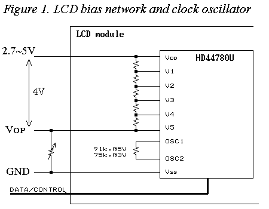
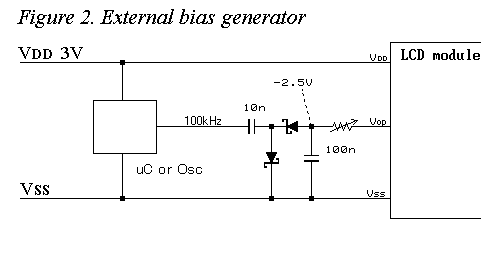

Using an LCD module at 3 volts
Jun. 1, 2000

The Character LCD Module is suitable as a display device which is attached to the small micro-controller system. It is often used for electronic handicrafts because it is easy to use and comparatively cheap from about $10.
When compare the LCD module with seven segments LED display, the LCD module can display various characters more than LED display. The power consumption of most LCD modules is less than 1 mA, so that it is also suitable for battery powered equipments.
But there is a problem that they cannot be used at low supply voltage, such as 3 volts and 3.3 volts, because those most is designed for 5V system. However, they can be used at low supply voltage with some considerations.
The LCD bias circuit

Most character LCD modules are using HD44780 (Hitachi) LCD controller and there are many HD44780 compatible chips. This document assumes that HD44780 or compatibles is being used for the LCD module.
The bias voltage between Vdd and Vop is divided by a resister network on the module as shown in Figure 1. The voltages are given to the LCD controller and expansion drivers as drive voltage levels. The bias voltage Vdd-Vop of around 4.0 to 4.5 volts is required and it also depends on the temperature, number of rows and LCD type, TN or STN. The supply voltage is divided with a trimer resister, and given to Vop as a bias supply.
When lower the supply voltage, the display becomes light and disappeared at about 3.5 volts even if tied Vop to Vss. This means the supply voltage of 3 volts is insufficient to drive LCD panel.
Negative supply voltage

The bias voltage applyed to Vop becomes lower than Vss when the supply voltage Vdd is 3 volt because the bias voltage of 4 volts is needed at between Vdd and Vop. Also the HD44780U allows negative bais voltage.
The circuit diagram for 3 volts sysytem supply is shown in the Figure 2. It requires a charge pump circuit to generate a negative supply voltage. The contrast can be adjusted by the value of series resister or switching frequency. When a pulse output from a microcontroller is used instead, the contrast can be controlled in software.
When the supply voltage is lowered, the oscillation frequency of the built-in clock oscillator falls down. The Rosc should be changed to proper value for that supply voltage when the extension of command execution time cannot be accepted. The Rosc is the resister of 91k ohms on the LCD module (it may be different value).
When the supply voltage is changed, the interface timing is specified by different spec that for 2.7 to 5.5 volts supply voltage, so that it may be taken into consideration in the fast microcontrollers. For the details, refer to datasheet of the LCD controller chip on the module.